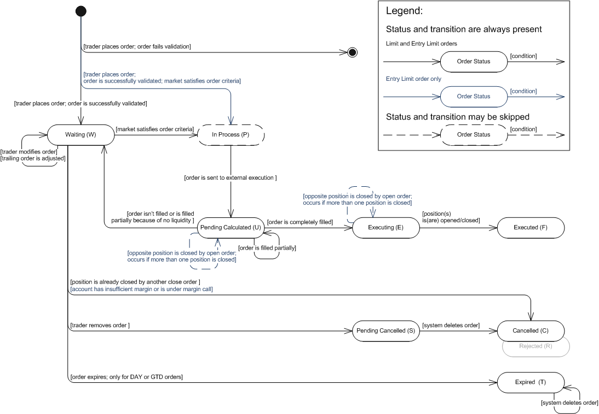

Limit/Entry Limit Orders
Brief
The article describes the limit and entry limit orders.
Details
A Limit Order is an order to buy or sell an instrument once the market price reaches a specified price. When the specified price is reached, the limit order is executed at the limit or better price. The limit order can be used to enter or exit the market.
The order is used to lock the trader's profit on a trade. The limit order to buy an instrument locks profits on sell trades. In this case the order is placed at a price that is below the current market price. The limit order to sell locks profits on buy trades and the order is placed above the current market price.
The limit order can be used on regular accounts which are not subject to FIFO. FIFO-based accounts do not allow placing closing limit orders, so whether the trader is willing to exit the market by limit order he/she must use an Entry Limit Order.
A closing limit order can be automatically adjusted while the market moves away from the limit order price. Such order is called a Trailing Limit Order.
The order is used for entering the market in case the trader thinks that the market price will reverse direction after reaching the limit price of the order. In other words, the trader desires to buy on a dip or sell on a rally. When the market price reaches the limit price the order is executed. See execution Scenario 1.
As was said below the order is used for entering the market, however, if hedging on an account is disabled, placing an entry limit order in the direction opposite to an existing position will result in closing such position. So the entry limit order is used as closing limit order on FIFO accounts and it is a secondary order of the ELS (Entry-with-Limit-and-Stop) Contingent Order.
An entry limit order can be automatically adjusted while the market moves away from the limit order price. Such order is called a Trailing Entry Limit Order.
An entry limit order can be specified as a Net Amount Order. This is an instruction to close all positions in the given instrument. With net amount orders, the system does not check whether an account has sufficient funds to accommodate an order. Scenario 4
The trader has the following time-in-force options that provide additional instructions on how long an order should remain active:
Time-in-Force Option |
Description |
Good Till Cancelled (GTC) |
An order which remains active until the trader decides to cancel it or until the order is executed. In the event of limited liquidity, a GTC order may be executed in portions. Such execution results in a number of positions opened/closed at different prices. |
Day (DAY) |
An order that automatically expires if not executed on the day the order is placed. During the trading day the order behaves exactly like a GTC order. |
Good Till Date (GTD) |
An order that automatically expires if not executed before the specified date. During the trading day the order behaves exactly like a GTC order. |
A limit order guarantees execution and price. To fill a limit order, the system searches for the best price. If the best price is equal or better than the original price of the order, the order will be executed at the best price. The best price may also be worse than the original price of the order. In this case, the order is set to wait until the market once again hits the price specified in the order.
A limit order can be executed partially. It means that one order may result in a number of positions opened/closed at different prices. When the market satisfied the order criteria it is filled in portions to the maximum extent possible (until the liquidity pool is dried up), the remainder of the order is set to wait. In case of partial closing, the system closes a position in the filled amount and opens a new position in the remaining amount. See Execution Scenarios.
The limit/entry limit orders state machine is based on the FXCM order statuses. The description of order statuses, their transitions and state machine are provided below. Note that the order is created by the system only after successful order validation. If the order does not pass validation, the system creates a rejection message and does not store the order in the database. However, the information about the order (such as, for example, the order ID and the reason for its rejection) is stored in the database. So, the initial transition on the diagram indicates that the order is successfully validated.
Limit/Entry Limit Orders: State Machine

Limit/Entry Limit Orders: FXCM Order Statuses Description
Order Status |
Order Status Description |
Transition |
||||||||||
Waiting (W) |
The status has one of the following meanings:
|
|
||||||||||
In Process (P) |
The status has one of the following meanings:
|
|
||||||||||
Pending Calculated (U) |
The status has one of the following meanings:
|
|
||||||||||
Executing (E) |
The order was completely filled. |
|
||||||||||
Executed (F) |
A position was opened/closed. Note that the order may result in a number of open/closed positions. |
|||||||||||
Pending Cancelled (S) |
The status is applicable only to GTC orders: |
|
||||||||||
Cancelled (C) |
The status has one of the following meanings:
|
|||||||||||
Expired (T) |
The status is applicable only to DAY or GTD orders: |
|